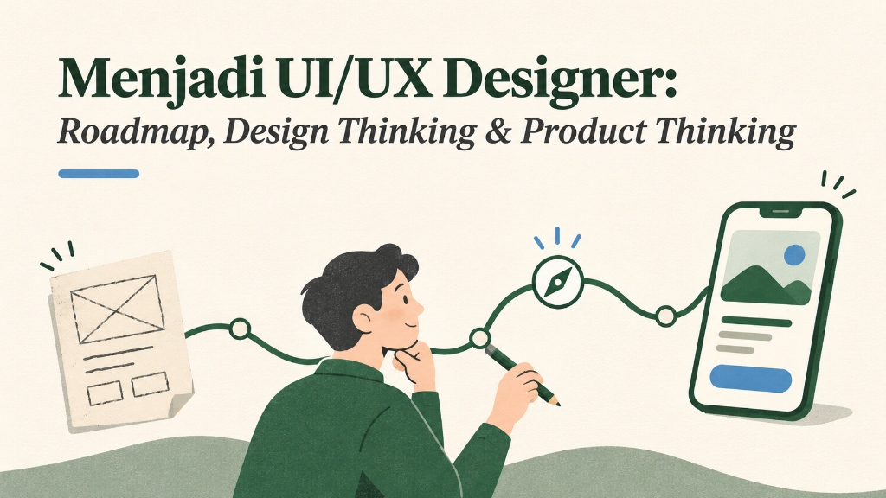
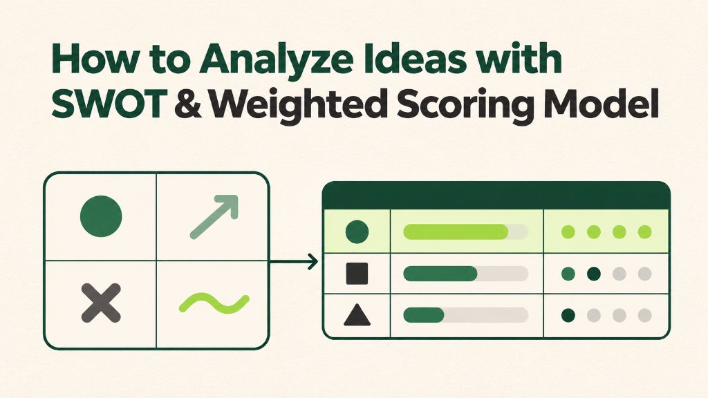
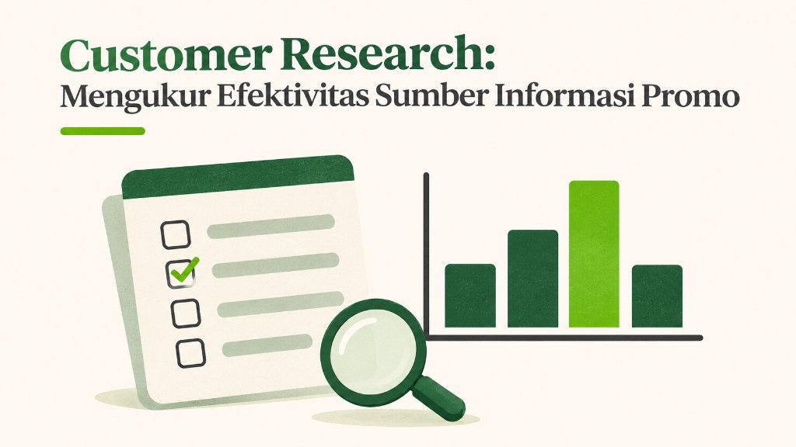
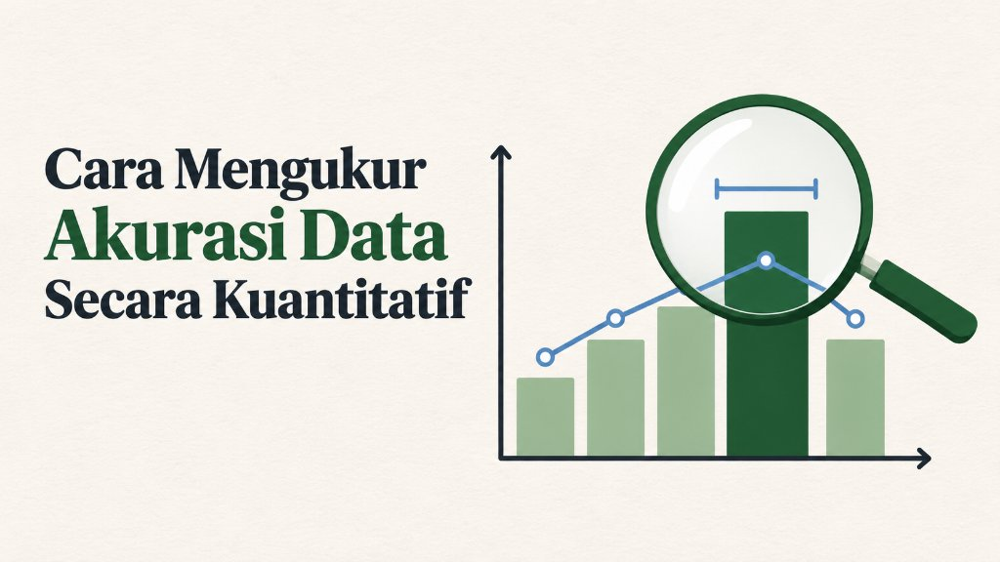

Articles & Practical Frameworks
Catatan praktik seputar UI/UX design, optimasi konversi website, Lean UX untuk tim kecil, riset pelanggan, hingga metode prioritas ide.

“Estetika vs Performa” Mengapa Banyak Website Cantik Gagal Menghasilkan Konversi?
Membedah 5 penyebab utama website yang terlihat modern tetap rendah konversinya—mulai dari hierarchy, cognitive load, hingga animasi berlebihan.

Lean UX “Lite” for Small Team: Playbook Microsite & Pengukuran
Panduan praktis dari workshop 2 jam, template hipotesis, guerrilla usability testing, hingga metrik GA4 dan heatmap untuk microsite kampanye.

Menjadi UI/UX Designer: Roadmap, Design Thinking & Product Thinking
Panduan awal memahami prinsip UI/UX, metode desain, kolaborasi lintas tim dengan developer, dan pentingnya product thinking untuk naik level.

How to Analyze Ideas with SWOT & Weighted Scoring Model
Cara memetakan pain point lewat analisis TOWS/SWOT lalu memberi bobot prioritas secara objektif menggunakan Weighted Scoring Matrix.

Customer Research: Mengukur Efektivitas Sumber Informasi Promo
Kerangka riset pelanggan dari penentuan sampel, kuesioner kuantitatif, hingga pengolahan Skala Ketertarikan dan Frekuensi.

Cara Mengukur Akurasi Data Secara Kuantitatif
Tiga metode menjaga validitas hasil riset: persentase kesalahan, cross-check dengan data penjualan/analytics, dan confidence interval.